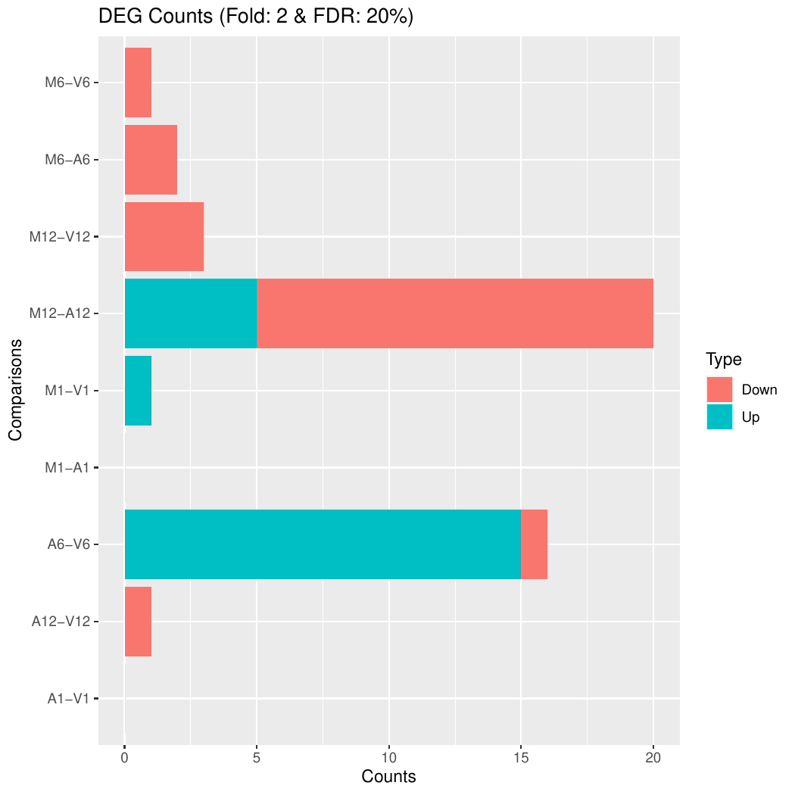
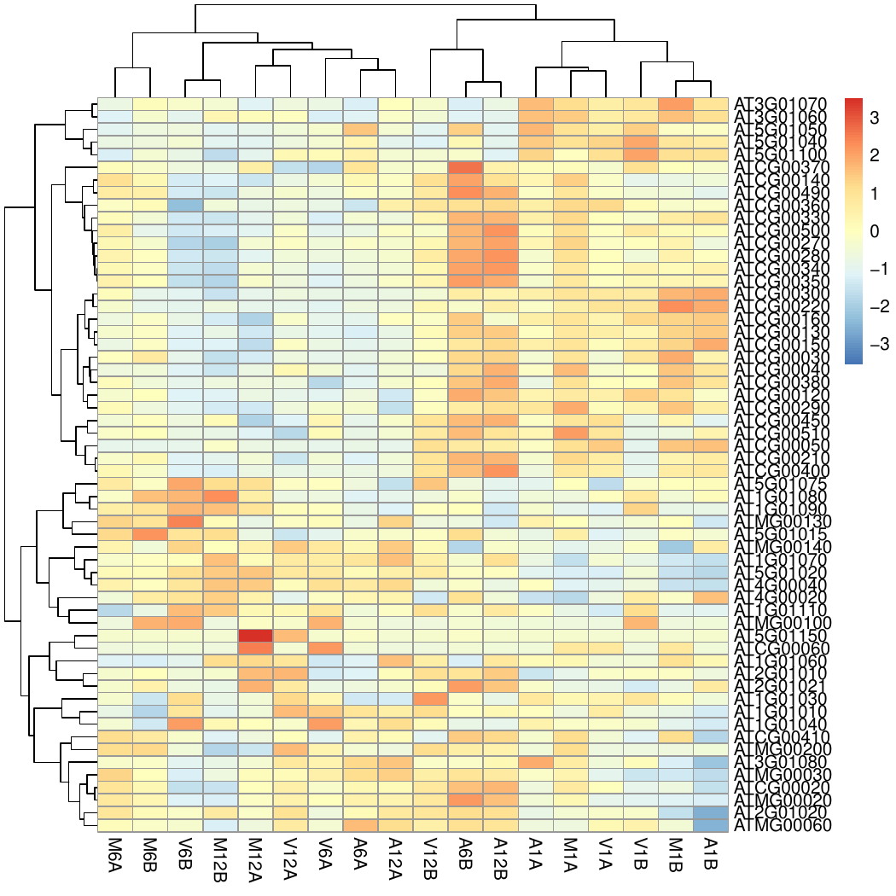

RNA-Seq Workflow Template
20 minute read
Source code downloads: [ .Rmd ]
Introduction
This report describes the analysis of the RNA-Seq data set from Howard et al (2013). The corresponding FASTQ files were downloaded from GEO (Accession: SRP010938). This data set contains 18 paired-end (PE) read sets from Arabidposis thaliana. The details about all download steps are provided here.
Users want to provide here additional background information about the design of their RNA-Seq project.
Experimental design
Typically, users want to specify here all information relevant for the analysis of their NGS study. This includes detailed descriptions of FASTQ files, experimental design, reference genome, gene annotations, etc.
Workflow environment
NOTE: this section describes how to set up the proper
environment (directory structure) for running systemPipeR workflows. After
mastering this task the workflow run instructions can be
deleted since they are not expected to be included in a final HTML/PDF
report of a workflow.
-
If a remote system or cluster is used, then users need to log in to the remote system first. The following applies to an HPC cluster (e.g. HPCC cluster).
A terminal application needs to be used to log in to a user’s cluster account. Next, one can open an interactive session on a computer node with
srun. More details about argument settings forsrunare available in this HPCC manual or the HPCC section of this website here. Next, load the R version required for running the workflow withmodule load. Sometimes it may be necessary to first unload an active software version before loading another version, e.g.module unload R.
srun --x11 --partition=gen242 --mem=20gb --cpus-per-task 8 --ntasks 1 --time 20:00:00 --pty bash -l
module unload R; module load load R/4.1.2
- Load a workflow template with the
genWorkenvirfunction. This can be done from the command-line or from within R. However, only one of the two options needs to be used.
From command-line
$ Rscript -e "systemPipeRdata::genWorkenvir(workflow='rnaseq')"
$ cd rnaseq
From R
library(systemPipeRdata)
genWorkenvir(workflow = "rnaseq")
setwd("rnaseq")
-
Optional: if the user wishes to use another
Rmdfile than the template instance provided by thegenWorkenvirfunction, then it can be copied or downloaded into the root directory of the workflow environment (e.g. withcporwget). -
Now one can open from the root directory of the workflow the corresponding R Markdown script (e.g. systemPipeChIPseq.Rmd) using an R IDE, such as nvim-r, ESS or RStudio. Subsequently, the workflow can be run as outlined below. For learning purposes it is recommended to run workflows for the first time interactively. Once all workflow steps are understood and possibly modified to custom needs, one can run the workflow from start to finish with a single command using
runWF().
Load packages
The systemPipeR package needs to be loaded to perform the analysis
steps shown in this report (H Backman and Girke 2016). The package allows users
to run the entire analysis workflow interactively or with a single command
while also generating the corresponding analysis report. For details
see systemPipeR's main vignette.
library(systemPipeR)
To apply workflows to custom data, the user needs to modify the targets file and if
necessary update the corresponding parameter (.cwl and .yml) files.
A collection of pre-generated .cwl and .yml files are provided in the param/cwl subdirectory
of each workflow template. They are also viewable in the GitHub repository of systemPipeRdata (see
here).
For more information of the structure of the targets file, please consult the documentation
here. More details about the new parameter files from systemPipeR can be found here.
Import custom functions
Custom functions for the challenge projects can be imported with the source command from a local R script (here challengeProject_Fct.R). Skip this step if such a script is not available. Alternatively, these functions can be loaded from a custom R package.
source("challengeProject_Fct.R")
Experiment definition provided by targets file
The targets file defines all FASTQ files and sample comparisons of the analysis workflow.
If needed the tab separated (TSV) version of this file can be downloaded from here
and the corresponding Google Sheet is here.
targetspath <- "targetsPE.txt"
targets <- read.delim(targetspath, comment.char = "#")
DT::datatable(targets, options = list(scrollX = TRUE, autoWidth = TRUE))
Workflow steps
This tutorial will demonstrate how to build the workflow in an interactive mode,
appending each step. The workflow is constructed by connecting each step via
appendStep method. Each SYSargsList instance contains instructions for
processing a set of input files with a specific command-line or R software
and the paths to the corresponding outfiles generated by a particular command-line
software/step.
To create a workflow within systemPipeR, we can start by defining an empty
container and checking the directory structure:
library(systemPipeR)
sal <- SPRproject()
sal
Required packages and resources
The systemPipeR package needs to be loaded (H Backman and Girke 2016).
appendStep(sal) <- LineWise(code = {
library(systemPipeR)
}, step_name = "load_SPR")
Read preprocessing
Read quality filtering and trimming
The function preprocessReads allows to apply predefined or custom
read preprocessing functions to all FASTQ files referenced in a
SYSargsList container, such as quality filtering or adapter trimming
routines. The paths to the resulting output FASTQ files are stored in the
outfiles slot of the SYSargsList object. The following example performs adapter trimming with
the trimLRPatterns function from the Biostrings package.
After the trimming step a new targets file is generated (here
targets_trim.txt) containing the paths to the trimmed FASTQ files.
The new targets file can be used for the next workflow step with an updated
SYSargs2 instance, e.g. running the NGS alignments using the
trimmed FASTQ files.
Here, we are appending this step to the SYSargsList object created previously.
All the parameters are defined on the preprocessReads/preprocessReads-pe.yml and
preprocessReads/preprocessReads-pe.cwl files.
appendStep(sal) <- SYSargsList(step_name = "preprocessing", targets = "targetsPE.txt",
dir = TRUE, wf_file = "preprocessReads/preprocessReads-pe.cwl",
input_file = "preprocessReads/preprocessReads-pe.yml", dir_path = "param/cwl",
inputvars = c(FileName1 = "_FASTQ_PATH1_", FileName2 = "_FASTQ_PATH2_",
SampleName = "_SampleName_"), dependency = c("load_SPR"))
After, we can check the trimLRPatterns function in input parameter:
yamlinput(sal, "preprocessing")$Fct
After the preprocessing step, the outfiles files can be used to generate the new
targets files containing the paths to the trimmed FASTQ files. The new targets
information can be used for the next workflow step instance, e.g. running the
NGS alignments with the trimmed FASTQ files. The appendStep function is
automatically handling this connectivity between steps. Please check the Alignments
step for more details.
FASTQ quality report
The following seeFastq and seeFastqPlot functions generate and plot a series of useful
quality statistics for a set of FASTQ files including per cycle quality box
plots, base proportions, base-level quality trends, relative k-mer
diversity, length and occurrence distribution of reads, number of reads
above quality cutoffs and mean quality distribution. The results are
written to a PDF file named fastqReport.pdf.
appendStep(sal) <- LineWise(code = {
fastq <- getColumn(sal, step = "preprocessing", "targetsWF",
column = 1)
fqlist <- seeFastq(fastq = fastq, batchsize = 10000, klength = 8)
pdf("./results/fastqReport.pdf", height = 18, width = 4 *
length(fqlist))
seeFastqPlot(fqlist)
dev.off()
}, step_name = "fastq_report", dependency = "preprocessing")

Figure 1: FASTQ quality report for 18 samples
Alignments
Read mapping with HISAT2
The following steps will demonstrate how to use the short read aligner Hisat2
(Kim, Langmead, and Salzberg 2015) in both interactive job submissions and batch submissions to
queuing systems of clusters using the systemPipeR's new CWL command-line interface.
The following steps will demonstrate how to use the short read aligner Hisat2
(Kim, Langmead, and Salzberg 2015). First, the Hisat2 index needs to be created.
appendStep(sal) <- SYSargsList(step_name = "hisat2_index", dir = FALSE,
targets = NULL, wf_file = "hisat2/hisat2-index.cwl", input_file = "hisat2/hisat2-index.yml",
dir_path = "param/cwl", dependency = "load_SPR")
The parameter settings of the aligner are defined in the workflow_hisat2-pe.cwl
and workflow_hisat2-pe.yml files. The following shows how to construct the
corresponding SYSargsList object. Please note that the targets used in this
step are the outfiles from preprocessing step.
appendStep(sal) <- SYSargsList(step_name = "hisat2_mapping",
dir = TRUE, targets = "preprocessing", wf_file = "workflow-hisat2/workflow_hisat2-pe.cwl",
input_file = "workflow-hisat2/workflow_hisat2-pe.yml", dir_path = "param/cwl",
inputvars = c(preprocessReads_1 = "_FASTQ_PATH1_", preprocessReads_2 = "_FASTQ_PATH2_",
SampleName = "_SampleName_"), rm_targets_col = c("FileName1",
"FileName2"), dependency = c("preprocessing", "hisat2_index"))
To double-check the command line for each sample, please use the following:
cmdlist(sal, step = "hisat2_mapping", targets = 1)
Read and alignment stats
The following provides an overview of the number of reads in each sample and how many of them aligned to the reference.
appendStep(sal) <- LineWise(code = {
fqpaths <- getColumn(sal, step = "preprocessing", "targetsWF",
column = "FileName1")
bampaths <- getColumn(sal, step = "hisat2_mapping", "outfiles",
column = "samtools_sort_bam")
read_statsDF <- alignStats(args = bampaths, fqpaths = fqpaths,
pairEnd = TRUE)
write.table(read_statsDF, "results/alignStats.xls", row.names = FALSE,
quote = FALSE, sep = "\t")
}, step_name = "align_stats", dependency = "hisat2_mapping")
The following shows the alignment statistics for a sample file provided by the systemPipeR package.
read.table("results/alignStats.xls", header = TRUE)[1:4, ]
## FileName Nreads2x Nalign Perc_Aligned Nalign_Primary
## 1 M1A 33609678 32136300 95.61621 32136300
## 2 M1B 53002402 43620124 82.29839 43620124
## 3 A1A 50223496 48438407 96.44571 48438407
## 4 A1B 43650000 35549889 81.44304 35549889
## Perc_Aligned_Primary
## 1 95.61621
## 2 82.29839
## 3 96.44571
## 4 81.44304
Create symbolic links for viewing BAM files in IGV
The symLink2bam function creates symbolic links to view the BAM alignment files in a
genome browser such as IGV without moving these large files to a local
system. The corresponding URLs are written to a file with a path
specified under urlfile, here IGVurl.txt.
Please replace the directory and the user name.
appendStep(sal) <- LineWise(code = {
bampaths <- getColumn(sal, step = "hisat2_mapping", "outfiles",
column = "samtools_sort_bam")
symLink2bam(sysargs = bampaths, htmldir = c("~/.html/", "somedir/"),
urlbase = "http://cluster.hpcc.ucr.edu/~<username>/",
urlfile = "./results/IGVurl.txt")
}, step_name = "bam_urls", dependency = "hisat2_mapping", run_step = "optional")
Read quantification
Reads overlapping with annotation ranges of interest are counted for
each sample using the summarizeOverlaps function (Lawrence et al. 2013). The read counting is
preformed for exonic gene regions in a non-strand-specific manner while
ignoring overlaps among different genes. Subsequently, the expression
count values are normalized by reads per kp per million mapped reads
(RPKM). The raw read count table (countDFeByg.xls) and the corresponding
RPKM table (rpkmDFeByg.xls) are written to separate files in the directory of
this project. Parallelization is achieved with the BiocParallel package, here
using 4 CPU cores.
Create a database for gene annotation
appendStep(sal) <- LineWise(code = {
library(GenomicFeatures)
txdb <- suppressWarnings(makeTxDbFromGFF(file = "data/tair10.gff",
format = "gff", dataSource = "TAIR", organism = "Arabidopsis thaliana"))
saveDb(txdb, file = "./data/tair10.sqlite")
}, step_name = "create_db", dependency = "hisat2_mapping")
Read counting with summarizeOverlaps in parallel mode using multiple cores
appendStep(sal) <- LineWise(code = {
library(GenomicFeatures)
library(BiocParallel)
txdb <- loadDb("./data/tair10.sqlite")
outpaths <- getColumn(sal, step = "hisat2_mapping", "outfiles",
column = "samtools_sort_bam")
eByg <- exonsBy(txdb, by = c("gene"))
bfl <- BamFileList(outpaths, yieldSize = 50000, index = character())
multicoreParam <- MulticoreParam(workers = 4)
register(multicoreParam)
registered()
counteByg <- bplapply(bfl, function(x) summarizeOverlaps(eByg,
x, mode = "Union", ignore.strand = TRUE, inter.feature = FALSE,
singleEnd = FALSE, BPPARAM = multicoreParam))
countDFeByg <- sapply(seq(along = counteByg), function(x) assays(counteByg[[x]])$counts)
rownames(countDFeByg) <- names(rowRanges(counteByg[[1]]))
colnames(countDFeByg) <- names(bfl)
rpkmDFeByg <- apply(countDFeByg, 2, function(x) returnRPKM(counts = x,
ranges = eByg))
write.table(countDFeByg, "results/countDFeByg.xls", col.names = NA,
quote = FALSE, sep = "\t")
write.table(rpkmDFeByg, "results/rpkmDFeByg.xls", col.names = NA,
quote = FALSE, sep = "\t")
## Creating a SummarizedExperiment object
colData <- data.frame(row.names = SampleName(sal, "hisat2_mapping"),
condition = getColumn(sal, "hisat2_mapping", position = "targetsWF",
column = "Factor"))
colData$condition <- factor(colData$condition)
countDF_se <- SummarizedExperiment::SummarizedExperiment(assays = countDFeByg,
colData = colData)
## Add results as SummarizedExperiment to the workflow
## object
SE(sal, "read_counting") <- countDF_se
}, step_name = "read_counting", dependency = "create_db")
When providing a BamFileList as in the example above, summarizeOverlaps methods
use by default bplapply and use the register interface from BiocParallel package.
If the number of workers is not set, MulticoreParam will use the number of cores
returned by parallel::detectCores(). For more information,
please check help("summarizeOverlaps") documentation.
Shows count table generated in previous step (countDFeByg.xls).
To avoid slowdowns of the load time of this page, ony 200 rows of the source
table are imported into the below datatable view .
countDF <- read.delim("results/countDFeByg.xls", row.names = 1,
check.names = FALSE)[1:200, ]
DT::datatable(countDF, options = list(scrollX = TRUE, autoWidth = TRUE))
A data slice of RPKM table (rpkmDFeByg.xls) is shown here.
read.delim("results/rpkmDFeByg.xls", row.names = 1, check.names = FALSE)[1:4,
1:4]
## M1A M1B A1A A1B
## AT1G01010 15.552350 15.855557 15.515099 11.482534
## AT1G01020 5.663586 8.550121 5.550872 8.069877
## AT1G01030 6.294920 4.918521 6.180994 3.092568
## AT1G01040 13.909390 12.846007 11.638283 11.304143
Note, for most statistical differential expression or abundance analysis
methods, such as edgeR or DESeq2, the raw count values should be used as input. The
usage of RPKM values should be restricted to specialty applications
required by some users, e.g. manually comparing the expression levels
among different genes or features.
Sample-wise correlation analysis
The following computes the sample-wise Spearman correlation coefficients from
the rlog transformed expression values generated with the DESeq2 package. After
transformation to a distance matrix, hierarchical clustering is performed with
the hclust function and the result is plotted as a dendrogram
(also see file sample_tree.pdf).
appendStep(sal) <- LineWise(code = {
library(DESeq2, quietly = TRUE)
library(ape, warn.conflicts = FALSE)
## Extracting SummarizedExperiment object
se <- SE(sal, "read_counting")
dds <- DESeqDataSet(se, design = ~condition)
d <- cor(assay(rlog(dds)), method = "spearman")
hc <- hclust(dist(1 - d))
pdf("results/sample_tree.pdf")
plot.phylo(as.phylo(hc), type = "p", edge.col = "blue", edge.width = 2,
show.node.label = TRUE, no.margin = TRUE)
dev.off()
}, step_name = "sample_tree", dependency = "read_counting")

Figure 2: Correlation dendrogram of samples
Analysis of DEGs
The analysis of differentially expressed genes (DEGs) is performed with
the glm method of the edgeR package (Robinson, McCarthy, and Smyth 2010). The sample
comparisons used by this analysis are defined in the header lines of the
targets.txt file starting with <CMP>.
Run edgeR
appendStep(sal) <- LineWise(code = {
library(edgeR)
countDF <- read.delim("results/countDFeByg.xls", row.names = 1,
check.names = FALSE)
cmp <- readComp(stepsWF(sal)[["hisat2_mapping"]], format = "matrix",
delim = "-")
edgeDF <- run_edgeR(countDF = countDF, targets = targetsWF(sal)[["hisat2_mapping"]],
cmp = cmp[[1]], independent = FALSE, mdsplot = "")
}, step_name = "run_edger", dependency = "read_counting")
Add gene descriptions
appendStep(sal) <- LineWise(code = {
library("biomaRt")
m <- useMart("plants_mart", dataset = "athaliana_eg_gene",
host = "https://plants.ensembl.org")
desc <- getBM(attributes = c("tair_locus", "description"),
mart = m)
desc <- desc[!duplicated(desc[, 1]), ]
descv <- as.character(desc[, 2])
names(descv) <- as.character(desc[, 1])
edgeDF <- data.frame(edgeDF, Desc = descv[rownames(edgeDF)],
check.names = FALSE)
write.table(edgeDF, "./results/edgeRglm_allcomp.xls", quote = FALSE,
sep = "\t", col.names = NA)
}, step_name = "custom_annot", dependency = "run_edger")
Plot DEG results
Filter and plot DEG results for up and down regulated genes. The
definition of up and down is given in the corresponding help
file. To open it, type ?filterDEGs in the R console.
appendStep(sal) <- LineWise(code = {
edgeDF <- read.delim("results/edgeRglm_allcomp.xls", row.names = 1,
check.names = FALSE)
pdf("results/DEGcounts.pdf")
DEG_list <- filterDEGs(degDF = edgeDF, filter = c(Fold = 2,
FDR = 20))
dev.off()
write.table(DEG_list$Summary, "./results/DEGcounts.xls",
quote = FALSE, sep = "\t", row.names = FALSE)
}, step_name = "filter_degs", dependency = "custom_annot")

Figure 3: Up and down regulated DEGs with FDR of 1%
Venn diagrams of DEG sets
The overLapper function can compute Venn intersects for large numbers of sample
sets (up to 20 or more) and plots 2-5 way Venn diagrams. A useful
feature is the possibility to combine the counts from several Venn
comparisons with the same number of sample sets in a single Venn diagram
(here for 4 up and down DEG sets).
appendStep(sal) <- LineWise(code = {
vennsetup <- overLapper(DEG_list$Up[6:9], type = "vennsets")
vennsetdown <- overLapper(DEG_list$Down[6:9], type = "vennsets")
pdf("results/vennplot.pdf")
vennPlot(list(vennsetup, vennsetdown), mymain = "", mysub = "",
colmode = 2, ccol = c("blue", "red"))
dev.off()
}, step_name = "venn_diagram", dependency = "filter_degs")

Figure 4: Venn Diagram for 4 Up and Down DEG Sets
GO term enrichment analysis
Obtain gene-to-GO mappings
The following shows how to obtain gene-to-GO mappings from biomaRt (here for A.
thaliana) and how to organize them for the downstream GO term
enrichment analysis. Alternatively, the gene-to-GO mappings can be
obtained for many organisms from Bioconductor’s *.db genome annotation
packages or GO annotation files provided by various genome databases.
For each annotation this relatively slow preprocessing step needs to be
performed only once. Subsequently, the preprocessed data can be loaded
with the load function as shown in the next subsection.
appendStep(sal) <- LineWise(code = {
library("biomaRt")
# listMarts() # To choose BioMart database
# listMarts(host='plants.ensembl.org')
m <- useMart("plants_mart", host = "https://plants.ensembl.org")
m <- useMart("plants_mart", dataset = "athaliana_eg_gene",
host = "https://plants.ensembl.org")
go <- getBM(attributes = c("go_id", "tair_locus", "namespace_1003"),
mart = m)
go <- go[go[, 3] != "", ]
go[, 3] <- as.character(go[, 3])
go[go[, 3] == "molecular_function", 3] <- "F"
go[go[, 3] == "biological_process", 3] <- "P"
go[go[, 3] == "cellular_component", 3] <- "C"
go[1:4, ]
if (!dir.exists("./data/GO"))
dir.create("./data/GO")
write.table(go, "data/GO/GOannotationsBiomart_mod.txt", quote = FALSE,
row.names = FALSE, col.names = FALSE, sep = "\t")
catdb <- makeCATdb(myfile = "data/GO/GOannotationsBiomart_mod.txt",
lib = NULL, org = "", colno = c(1, 2, 3), idconv = NULL)
save(catdb, file = "data/GO/catdb.RData")
}, step_name = "get_go_annot", dependency = "filter_degs")
Batch GO term enrichment analysis
Apply the enrichment analysis to the DEG sets obtained the above differential
expression analysis. Note, in the following example the FDR filter is set
here to an unreasonably high value, simply because of the small size of the toy
data set used in this vignette. Batch enrichment analysis of many gene sets is
performed with the function. When method=all, it returns all GO terms passing
the p-value cutoff specified under the cutoff arguments. When method=slim,
it returns only the GO terms specified under the myslimv argument. The given
example shows how a GO slim vector for a specific organism can be obtained from
BioMart.
appendStep(sal) <- LineWise(code = {
library("biomaRt")
load("data/GO/catdb.RData")
DEG_list <- filterDEGs(degDF = edgeDF, filter = c(Fold = 2,
FDR = 50), plot = FALSE)
up_down <- DEG_list$UporDown
names(up_down) <- paste(names(up_down), "_up_down", sep = "")
up <- DEG_list$Up
names(up) <- paste(names(up), "_up", sep = "")
down <- DEG_list$Down
names(down) <- paste(names(down), "_down", sep = "")
DEGlist <- c(up_down, up, down)
DEGlist <- DEGlist[sapply(DEGlist, length) > 0]
BatchResult <- GOCluster_Report(catdb = catdb, setlist = DEGlist,
method = "all", id_type = "gene", CLSZ = 2, cutoff = 0.9,
gocats = c("MF", "BP", "CC"), recordSpecGO = NULL)
m <- useMart("plants_mart", dataset = "athaliana_eg_gene",
host = "https://plants.ensembl.org")
goslimvec <- as.character(getBM(attributes = c("goslim_goa_accession"),
mart = m)[, 1])
BatchResultslim <- GOCluster_Report(catdb = catdb, setlist = DEGlist,
method = "slim", id_type = "gene", myslimv = goslimvec,
CLSZ = 10, cutoff = 0.01, gocats = c("MF", "BP", "CC"),
recordSpecGO = NULL)
write.table(BatchResultslim, "results/GOBatchSlim.xls", row.names = FALSE,
quote = FALSE, sep = "\t")
}, step_name = "go_enrich", dependency = "get_go_annot")
Shows GO term enrichment results from previous step. The last gene identifier column (10) of this table has been excluded in this viewing instance to minimize the complexity of the result. To avoid slowdowns of the load time of this page, only 10 rows of the source table are shown below.
BatchResult <- read.delim("results/GOBatchAll.xls")[1:10, ]
knitr::kable(BatchResult[, -10])
| CLID | CLSZ | GOID | NodeSize | SampleMatch | Phyper | Padj | Term | Ont |
|---|---|---|---|---|---|---|---|---|
| M1-A1_up_down | 26 | GO:0050291 | 4 | 1 | 0.0039621 | 0.0396207 | sphingosine N-acyltransferase activity | MF |
| M1-A1_up_down | 26 | GO:0004345 | 6 | 1 | 0.0059375 | 0.0593750 | glucose-6-phosphate dehydrogenase activity | MF |
| M1-A1_up_down | 26 | GO:0050664 | 11 | 1 | 0.0108597 | 0.1085975 | oxidoreductase activity, acting on NAD(P)H, oxygen as acceptor | MF |
| M1-A1_up_down | 26 | GO:0052593 | 11 | 1 | 0.0108597 | 0.1085975 | tryptamine:oxygen oxidoreductase (deaminating) activity | MF |
| M1-A1_up_down | 26 | GO:0052594 | 11 | 1 | 0.0108597 | 0.1085975 | aminoacetone:oxygen oxidoreductase(deaminating) activity | MF |
| M1-A1_up_down | 26 | GO:0052595 | 11 | 1 | 0.0108597 | 0.1085975 | aliphatic-amine oxidase activity | MF |
| M1-A1_up_down | 26 | GO:0052596 | 11 | 1 | 0.0108597 | 0.1085975 | phenethylamine:oxygen oxidoreductase (deaminating) activity | MF |
| M1-A1_up_down | 26 | GO:0052793 | 12 | 1 | 0.0118414 | 0.1184141 | pectin acetylesterase activity | MF |
| M1-A1_up_down | 26 | GO:0008131 | 15 | 1 | 0.0147808 | 0.1478083 | primary amine oxidase activity | MF |
| M1-A1_up_down | 26 | GO:0016018 | 16 | 1 | 0.0157588 | 0.1575878 | cyclosporin A binding | MF |
Plot batch GO term results
The data.frame generated by GOCluster can be plotted with the goBarplot function. Because of the
variable size of the sample sets, it may not always be desirable to show
the results from different DEG sets in the same bar plot. Plotting
single sample sets is achieved by subsetting the input data frame as
shown in the first line of the following example.
appendStep(sal) <- LineWise(code = {
gos <- BatchResultslim[grep("M6-V6_up_down", BatchResultslim$CLID),
]
gos <- BatchResultslim
png("results/GOslimbarplotMF.png")
goBarplot(gos, gocat = "MF")
dev.off()
png("results/GOslimbarplotBP.png")
goBarplot(gos, gocat = "BP")
dev.off()
png("results/GOslimbarplotCC.png")
goBarplot(gos, gocat = "CC")
dev.off()
}, step_name = "go_plot", dependency = "go_enrich")

Figure 5: GO Slim Barplot for MF Ontology
Clustering and heat maps
The following example performs hierarchical clustering on the rlog
transformed expression matrix subsetted by the DEGs identified in the above
differential expression analysis. It uses a Pearson correlation-based distance
measure and complete linkage for cluster joining.
appendStep(sal) <- LineWise(code = {
library(pheatmap)
geneids <- unique(as.character(unlist(DEG_list[[1]])))
y <- assay(rlog(dds))[geneids, ]
pdf("results/heatmap1.pdf")
pheatmap(y, scale = "row", clustering_distance_rows = "correlation",
clustering_distance_cols = "correlation")
dev.off()
}, step_name = "heatmap", dependency = "go_enrich")

Figure 6: Heat Map with Hierarchical Clustering Dendrograms of DEGs
Version Information
appendStep(sal) <- LineWise(code = {
sessionInfo()
}, step_name = "sessionInfo", dependency = "heatmap")
Running workflow
Interactive job submissions in a single machine
For running the workflow, runWF function will execute all the steps store in
the SYSargsList workflow container. The execution will be on a single machine without
submitting to a queuing system of a computer cluster. Besides, runWF allows the
user to create a dedicated results folder for each workflow. This includes all the
output and log files for each step. When these options are used, the output
location will be updated by default and can be assigned to the same object.
sal <- runWF(sal)
Parallelization on clusters
Alternatively, the computation can be greatly accelerated by processing many files in parallel using several compute nodes of a cluster, where a scheduling/queuing system is used for load balancing.
The resources list object provides the number of independent parallel cluster
processes defined under the Njobs element in the list. The following example
will run 18 processes in parallel using each 4 CPU cores.
If the resources available on a cluster allow running all 18 processes at the
same time, then the shown sample submission will utilize in a total of 72 CPU cores.
Note, runWF can be used with most queueing systems as it is based on utilities
from the batchtools package, which supports the use of template files (*.tmpl)
for defining the run parameters of different schedulers. To run the following
code, one needs to have both a conffile (see .batchtools.conf.R samples here)
and a template file (see *.tmpl samples here)
for the queueing available on a system. The following example uses the sample
conffile and template files for the Slurm scheduler provided by this package.
The resources can be appended when the step is generated, or it is possible to
add these resources later, as the following example using the addResources
function:
resources <- list(conffile=".batchtools.conf.R",
template="batchtools.slurm.tmpl",
Njobs=18,
walltime=120, ## minutes
ntasks=1,
ncpus=4,
memory=1024, ## Mb
partition = "short"
)
sal <- addResources(sal, step = c("hisat2_mapping"), resources = resources)
sal <- runWF(sal)
Visualize workflow
systemPipeR workflows instances can be visualized with the plotWF function.
plotWF(sal, out_format = "html", out_path = "plotWF.html")
Checking workflow status
To check the summary of the workflow, we can use:
sal
statusWF(sal)
Accessing logs report
systemPipeR compiles all the workflow execution logs in one central location,
making it easier to check any standard output (stdout) or standard error
(stderr) for any command-line tools used on the workflow or the R code stdout.
sal <- renderLogs(sal)
Funding
This project is funded by NSF award ABI-1661152.
References
H Backman, Tyler W, and Thomas Girke. 2016. “systemPipeR: NGS workflow and report generation environment.” BMC Bioinformatics 17 (1): 388. https://doi.org/10.1186/s12859-016-1241-0.
Howard, Brian E, Qiwen Hu, Ahmet Can Babaoglu, Manan Chandra, Monica Borghi, Xiaoping Tan, Luyan He, et al. 2013. “High-Throughput RNA Sequencing of Pseudomonas-Infected Arabidopsis Reveals Hidden Transcriptome Complexity and Novel Splice Variants.” PLoS One 8 (10): e74183. https://doi.org/10.1371/journal.pone.0074183.
Kim, Daehwan, Ben Langmead, and Steven L Salzberg. 2015. “HISAT: A Fast Spliced Aligner with Low Memory Requirements.” Nat. Methods 12 (4): 357–60.
Lawrence, Michael, Wolfgang Huber, Hervé Pagès, Patrick Aboyoun, Marc Carlson, Robert Gentleman, Martin T Morgan, and Vincent J Carey. 2013. “Software for Computing and Annotating Genomic Ranges.” PLoS Comput. Biol. 9 (8): e1003118. https://doi.org/10.1371/journal.pcbi.1003118.
Robinson, M D, D J McCarthy, and G K Smyth. 2010. “EdgeR: A Bioconductor Package for Differential Expression Analysis of Digital Gene Expression Data.” Bioinformatics 26 (1): 139–40. https://doi.org/10.1093/bioinformatics/btp616.